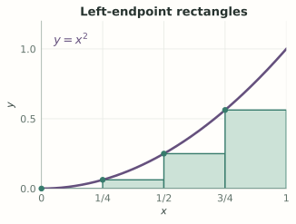
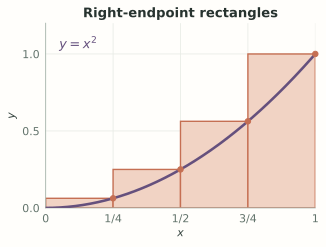
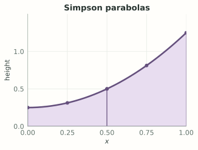
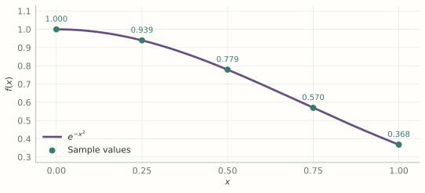
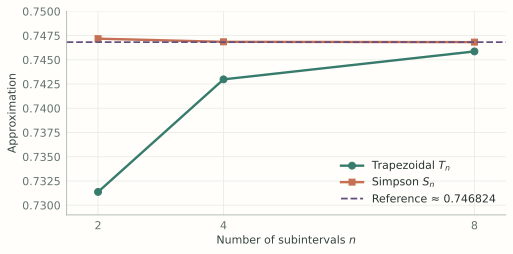

MA1508 Calculus · Chapter 5 · Sections 5.8–5.9
Numerical Integration
Approximate definite integrals with rectangles, trapezoids and parabolic arcs, using either a formula or measured values.
Stewart, Single Variable Calculus: Concepts and Contexts, 4th edition, §§5.8–5.9. The original section numbers below identify the textbook material within this lesson.
Stewart 5.9 · printed p. 401Numerical integration
Approximate a definite integral from sampled values
Numerical integration estimates a definite integral from finitely many function values. It is useful when an antiderivative is difficult to express in elementary functions, or when the available information is a table of measurements.
Use equal widths \(h=(b-a)/n\). Simpson’s panels use pairs of intervals, so \(n\) must be even.
The result is an approximation, not the exact integral by definition. We will calculate each rule and then discuss accuracy.
1. Start with rectangles: a calculation by hand
A finite number of rectangles already gives a useful approximation. Left and right rectangles use the height at the corresponding endpoint of each interval.


For \(h=(b-a)/n\),
Approximate \(I=\int_0^1x^2dx\) with four left and four right rectangles.
Show answerHide answer
- Here \(n=4\), \(h=1/4\). The endpoint samples are \(0,1/4,1/2,3/4,1\), whose squared values are \(0,1/16,1/4,9/16,1\).
- Left rectangles omit the last sample: \(L_4=\tfrac14(0+1/16+1/4+9/16)=7/32=0.21875\).
- Right rectangles omit the first: \(R_4=\tfrac14(1/16+1/4+9/16+1)=15/32=0.46875\).
- Since \(x^2\) is increasing, \(L_4\le I\le R_4\). Also \(T_4=(L_4+R_4)/2=11/32=0.34375\). The exact value \(I=1/3\) provides a check.
Increasing the number of intervals improves these particular rectangle estimates. For a general function, establish smoothness and an error bound before promising a numerical accuracy.
2. Midpoints and trapezoids
Slide the sample point across each fixed subinterval. At the left endpoint we get \(L_n\), at the centre \(M_n\), and at the right endpoint \(R_n\).
The second slider starts from midpoint rectangles and adjusts both the slope and the centre height until each top joins its two endpoint values. Moving the first slider returns to rectangles.
Let \(h=(b-a)/n\), \(x_i=a+ih\), and \(m_i=(x_{i-1}+x_i)/2\). A sample at fraction \(\theta\) across each interval gives
From midpoint to trapezoid. Tilting a line about a fixed centre preserves its area. A trapezoid also changes the centre height from \(f(m_i)\) to \([f(x_{i-1})+f(x_i)]/2\). Its top is the endpoint chord
For nonuniform sample spacing, add one trapezoid per interval using its own width. Equal-width composite formulas cannot be used unchanged on irregular timestamps.
Why the trapezoidal and midpoint rules have these weights
On \([x_{i-1},x_i]\), approximate the curve by the straight line joining the endpoint values. The trapezoid has signed area \(h[f(x_{i-1})+f(x_i)]/2\). Summing gives
Every interior value occurs twice, whereas each endpoint occurs once. Collecting terms produces the composite formula above. Equivalently, for equal widths, \(T_n=(L_n+R_n)/2\). A midpoint rectangle instead uses the single height \(f((x_{i-1}+x_i)/2)\) on each interval.
For convex \(f\), trapezoid chords lie above the graph and \(T_n\ge I\); midpoint rectangles give \(M_n\le I\). For concave \(f\), both inequalities reverse. These conclusions require the stated convexity or concavity on the whole interval.
3. Simpson’s Rule

For even \(n\), combine endpoint values with alternating weights 4 and 2:
Approximate \(\int_0^1x^2dx\) with \(M_2\), \(T_2\) and \(S_2\).
Show answerHide answer
- Midpoints are \(1/4,3/4\): \(M_2=\tfrac12(1/16+9/16)=5/16\).
- Trapezoids use 0, \(1/2\), 1: \(T_2=\tfrac12[0/2+1/4+1/2]=3/8\).
- Simpson gives \(S_2=\tfrac16[0+4(1/4)+1]=1/3\), equal to the exact integral. Simpson is exact for polynomials of degree at most 3.
Where Simpson’s weights come from
Keep the same three sample points \((-h,y_0)\), \((0,y_1)\), and \((h,y_2)\), with \(h>0\). Change only the middle height and compare the three constructions.
Midpoint rectangles
Coverage: \([-3h/2,3h/2]\).
Trapezoidal Rule
Coverage: \([-h,h]\).
Simpson’s Rule
Coverage: \([-h,h]\).
The rectangle samples are cell centres, so three full rectangles extend half a spacing beyond the outer samples. The trapezoidal and Simpson panels end at the outer samples. These pictures compare the constructions; their shaded regions cover the intervals labelled above. Here \(h=1\).
How do we find the quadratic? Write \(q(t)=At^2+Bt+C\). Passing through the three samples means
Subtract the endpoint equations to find \(B\); add them and use \(C=y_1\) to find \(A\):
The coefficients are uniquely determined. If \(A=0\), the three points lie on a straight line.
Now integrate this polynomial over \([-h,h]\). The odd term \(Bt\) cancels:
Apply this to consecutive pairs of subintervals. The joining values are counted twice, giving weights \(1,4,2,4,\ldots,2,4,1\). This is why the composite rule requires an even number of equally spaced subintervals. It integrates every polynomial of degree at most three exactly, although the interpolating panels are quadratic.
4. An integral without an elementary antiderivative
The function \(e^{-x^2}\) is continuous, but has no elementary antiderivative. Numerical integration estimates its definite integral directly from function values.
Read the graph. The dots give the heights used in the formulas; the curve shows what is being approximated.

Show the six-decimal sample values
| \(x_i\) | \(e^{-x_i^2}\), rounded |
|---|---|
| 0 | 1.000000 |
| 0.25 | 0.939413 |
| 0.50 | 0.778801 |
| 0.75 | 0.569783 |
| 1.00 | 0.367879 |
Estimate \(I=\int_0^1e^{-x^2}dx\) using the Midpoint, Trapezoidal and Simpson’s Rules, each with \(n=4\) subintervals.
Show answerHide answer
- The Midpoint Rule uses \(m_i=1/8,3/8,5/8,7/8\), giving \(M_4=\tfrac14\sum_{i=0}^3e^{-m_i^2}\approx0.748747\).
- The spacing is \(h=0.25\). With the table values, \(T_4=0.25[\tfrac12(1+0.367879)+0.939413+0.778801+0.569783]\approx0.742984\).
- For Simpson’s Rule, \(S_4=\tfrac{0.25}{3}[1+4(0.939413)+2(0.778801)+4(0.569783)+0.367879]\approx0.746855\). The alternating weights are \(1,4,2,4,1\).
- A more accurate reference value is \(I\approx0.746824\). Thus Simpson’s result is closer in this example. This comparison is a check, not an error guarantee for every integrand.
Python: one rule per block. Each block runs independently using only the standard library. Use unrounded function values with \(a=0\), \(b=1\), \(n=4\), and \(h=1/4\).
Notation: \(x_i=a+ih\), \(y_i=f(x_i)\), and \(m_i=a+(i+\tfrac12)h\).
Midpoint Rule
\(M_4\approx0.7487471\)
from math import exp
def f(x):
return exp(-x**2)
a, b = 0.0, 1.0
n = 4
h = (b - a) / n
M = h * sum(f(a + (i + 0.5) * h)
for i in range(n))
print(f"M_{n} = {M:.7f}")Trapezoidal Rule
\(T_4\approx0.7429841\)
from math import exp
def f(x):
return exp(-x**2)
a, b = 0.0, 1.0
n = 4
h = (b - a) / n
y = [f(a + i * h) for i in range(n + 1)]
T = h * ((y[0] + y[-1]) / 2
+ sum(y[1:-1]))
print(f"T_{n} = {T:.7f}")Simpson’s Rule
Use even \(n\).
\(S_4\approx0.7468554\)
from math import exp
def f(x):
return exp(-x**2)
a, b = 0.0, 1.0
n = 4 # Simpson requires even n
h = (b - a) / n
y = [f(a + i * h) for i in range(n + 1)]
S = h / 3 * (y[0] + y[-1]
+ 4 * sum(y[1:-1:2])
+ 2 * sum(y[2:-1:2]))
print(f"S_{n} = {S:.7f}")After the calculation. How do the trapezoidal and Simpson estimates change as the partition is refined?

Show the refinement values
| \(n\) | \(T_n\) | \(S_n\) |
|---|---|---|
| 2 | 0.731370 | 0.747180 |
| 4 | 0.742984 | 0.746855 |
| 8 | 0.745866 | 0.746826 |
The refinement plot and table use unrounded function values. Compare successive approximations to observe the change; the derivative bounds below explain when a certified error estimate is available.
5. Error bounds with stated assumptions
Let \(I=\int_a^bf\). If \(f\in C^2([a,b])\) and \(|f\prime\prime|\le K_2\), the midpoint and trapezoidal errors satisfy the first two bounds. If \(f\in C^4([a,b])\) and \(|f^{(4)}|\le K_4\), Simpson’s Rule satisfies the third.
How many trapezoids guarantee error at most \(10^{-3}\) for \(\int_0^1x^2dx\)?
Show answerHide answer
- Here \(f\prime\prime=2\), so the bound is \(1/(6n^2)\).
- Require \(n^2\ge1000/6\). The smallest integer meeting this is \(n=13\).
A small bonus: why does the trapezoidal error bound hold?
Assume \(f\in C^2([a,b])\) and \(|f''(x)|\le K_2\). Two integrations by parts turn the error into an integral involving the curvature \(f''\).
1. Start with one interval
On \([u,v]\), put \(h=v-u\). The integral and its trapezoidal approximation are
Choose a weight that vanishes at the endpoints and has second derivative \(-1\):
Its endpoint slopes are \(w'(u)=h/2\) and \(w'(v)=-h/2\), which will give the trapezoidal weights.
2. Integrate by parts twice
Since \(w\ge0\) and \(|f''|\le K_2\),
3. Add the interval errors
With \(n\) equal subintervals, \(h=(b-a)/n\). If \(e_i\) is the signed trapezoidal error on interval \(i\), the triangle inequality gives
The \(n^{-2}\) comes from adding \(n\) errors of size at most a constant times \(h^3\). Doubling \(n\) divides this upper bound by four.
A useful extra. The same identity shows that \(f''\ge0\) implies \(T_n\ge I\). For the earlier example \(f(x)=x^2\) on \([0,1]\), \(f''=2\) is constant and the bound is attained: \(T_n-I=1/(6n^2)\).
Explore: approximations and their error bounds
Try the theory. Compare \(n=4\) with \(n=8\): the bounds shrink by factors of 4 and 16. Does each actual error equal its bound?
Choose a function and change the number of subintervals. The dark curve is the exact integrand; the coloured panels show the approximating shapes. Use Play refinement to see what happens as \(n\) increases. The slider uses even \(n\) so both rules use the same partition.
TRAPEZOIDAL · Tn
Actual error \(|I-T_n|\) = —
Theoretical upper bound = —
—
SIMPSON · Sn
Actual error \(|I-S_n|\) = —
Theoretical upper bound = —
—
Solid lines are actual absolute errors; dashed lines are bounds, not predictions of the error. The vertical axis is logarithmic, so zero errors and zero bounds are omitted from the graph. The selected point and numbers above correspond to the current \(n\). Values are rounded for display.
For these smooth functions, the bounds shown are
Here \(K_2\) bounds \(|f''|\) and \(K_4\) bounds \(|f^{(4)}|\) throughout the interval. Doubling \(n\) divides the respective bounds by 4 and 16. The actual errors can decrease differently or be zero; Simpson’s rule is exact for the quadratic example.
Continuing background: estimating the same arrivals
For the model \(r(t)=6t\), trapezoids on any partition recover \(N=3\) thousand records exactly, because each segment is linear. Measurements of a real arrival stream may depart from that model. Quadrature estimates an integral of a chosen curve; it does not remove measurement noise or prove the model is correct. If every measured rate differs from the true rate by at most \(\varepsilon\), this alone can contribute at most \(\varepsilon(b-a)\) to the integrated total.
6. Check your understanding
Rates at times 0, 0.5 and 1 hour are 0, 3 and 6 thousand/hour. Find the trapezoidal total.
Show answerHide answer
- The two widths are 0.5 hour. The contributions are \(0.5(0+3)/2=0.75\) and \(0.5(3+6)/2=2.25\) thousand.
- Add the two contributions; these samples agree with the continuing linear model.
Stewart 5.8 · printed p. 394Optional: tables and computer algebra
Integral tables and computer algebra systems suggest symbolic antiderivatives. Check the domain and differentiate the result. Their output complements numerical approximations: a symbolic formula describes an antiderivative, while a numerical rule estimates a definite-integral value.
Show the optional table and CAS material
1. Match a table entry carefully
Integral tables give templates with parameters and conditions. Rescale the variable to match the template, keep the resulting differential factor, then differentiate the proposed antiderivative. For example, for \(a>0\),
Find \(\int dx/(4+x^2)\).
Show answerHide answer
- The table parameter is \(a=2\), so the candidate is \(\tfrac12\arctan(x/2)+C\).
- Differentiating gives \(\tfrac12\{1/[1+(x/2)^2]\}\tfrac12=1/(4+x^2)\).
2. Read a symbolic answer as a claim to check
A computer algebra system can transform an integral, return an antiderivative or introduce a special function. Record the real domain and any parameter assumptions. Two correct expressions can differ by a constant on an interval; compare derivatives rather than typography.
A symbolic tool suggests \(F(x)=\ln(x-1)\) for \(\int dx/(x-1)\). Is that a complete real answer?
Show answerHide answer
- The derivative is correct on \(x>1\), but \(\ln(x-1)\) is not real for \(x<1\).
- The real formula \(\ln|x-1|+C\) works separately on either side of 1. Constants may differ between disconnected intervals.
3. Existence is different from an elementary formula
The accumulation function \(E(x)=\int_0^xe^{-t^2}\,dt\) exists and satisfies \(E\prime(x)=e^{-x^2}\). It has no elementary antiderivative expression. A special-function answer and a numerical approximation are both useful, but answer different questions. §5.9 develops numerical evaluation.
A symbolic endpoint subtraction across a singularity may be invalid. For example, \(\int_{-1}^1dx/x\) is an improper integral and diverges under the usual definition, even though symmetric truncated pieces cancel. §5.10 explains the separate limits.
4. Check your understanding
A table gives \(\int dx/\sqrt{1-x^2}=\arcsin x+C\). Use it to evaluate \(\int_0^1 dx/\sqrt{4-x^2}\).
Show answerHide answer
- Put \(u=x/2\), so \(dx=2du\) and \(\sqrt{4-x^2}=2\sqrt{1-u^2}\). The new limits are 0 and \(1/2\).
- \(\int_0^{1/2}du/\sqrt{1-u^2}=[\arcsin u]_0^{1/2}=\pi/6\).
No particular software is required for this lesson. The mathematical checks apply to any table or symbolic tool.